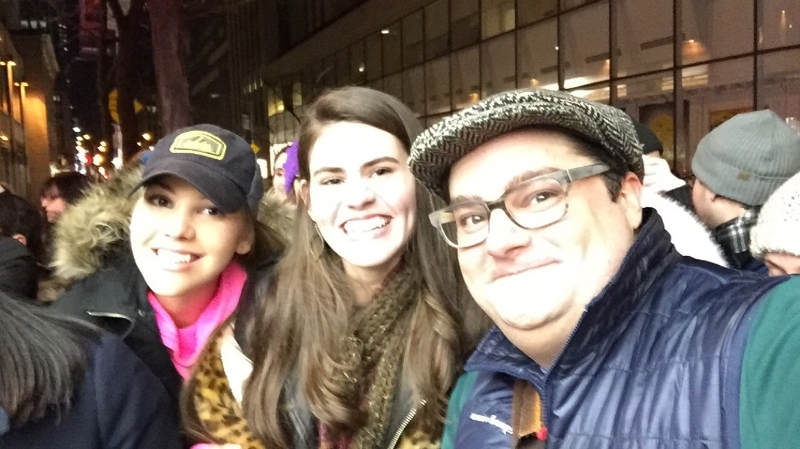

Happy February!
What a busy and exciting past month/few weeks it has been! From Lead Belly Fest rehearsals, to finally performing at Carnegie Hall on Thursday, Feb. 4th, and to spontaneously meeting a few members of the SNL cast this past weekend, I am feeling truly blessed and am looking forward to what the rest of this year has in store!
Performing at Carnegie Hall was indescribable. Truly an experience unlike any other. I performed "Take This Hammer", backed by my guitarist, Ray DeTone, accompanied by a video of the children from the Association to Benefit Children singing along on the choruses. Such a surreal, moving moment it was! I cannot thank the producers of Lead Belly Fest enough for giving me the opportunity to be part of a concert honoring the legacy of the one and only Huddie Ledbetter, known as Leadbelly. To perform in such a world-renowned venue alongside Buddy Guy, Eric Burdon, Edgar Winter, Marky Ramone, and all of the other ridiculously talented acts on the lineup, was absolutely inspiring. I admire the talent of each and every one of them and am so glad we were all able to come together to honor a man who has had such an astounding influence on the craft of music.
Flash forward a few days later... my friend, Nicole, and I spontaneously meet another group of talented individuals, aka members of the SNL cast! Crazy, right!? It's a show I one day hope to be able to perform on and share my music with, and it was really nice to meet the hilariously funny Bobby Moynihan (see picture below), Kyle Mooney, Vanessa Bayer, and Jay Pharoah. Who would've known my Saturday night would turn into a Saturday with Saturday Night Live!? (!!!)
Next month, on Thursday, March 24th, I am returning to Cafe Wha? in the East Village. I am particularly excited about this show because I will be debuting new material that I have been writing over the past couple of months. I'll be debuting 3 new tunes - just testing them out with the band to see how they work out on stage. By doing this, I'll be able to see what material I want to put on my forthcoming EP that I hope to start recording very soon. More information on my Cafe Wha? show can be found here: https://www.facebook.com/events/1689080741372877/
Make sure to follow me on my Twitter and Instagram (@IMAliIsabella), as well as "like" my Facebook Page to stay up to date with all the latest news and announcements!
Until next time, Ali